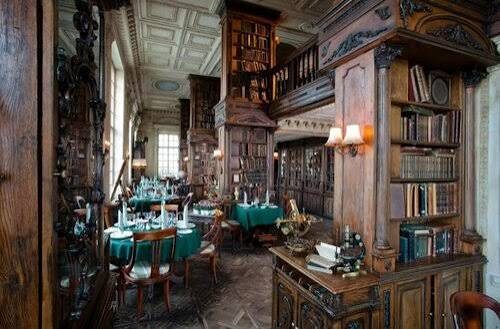
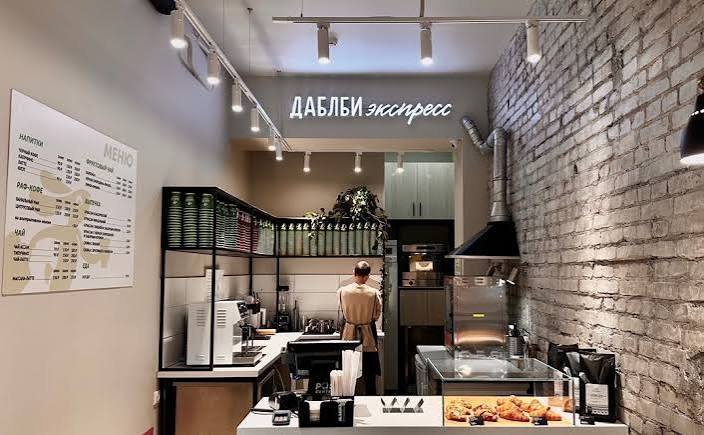

Моя подборка по трём критериям: кофе, атмосфера, кухня.
|
 Классический зал. |
 Стойка бариста. |
Нажмите на миниатюру — изображение 600×400 откроется в новом окне по центру.
| Кафе | Чем известно | Сайт |
|---|---|---|
 |
Выбирайте место под настроение. | Как мне узнать о нем больше? |
| Кафе «Пушкинъ» | Русская кухня | На сайт |
| Кофемания | Завтраки и десерты | На сайт |
| Surf Coffee | Современные кофейни | На сайт |
| Double B | Спешалти-кофе | На сайт |